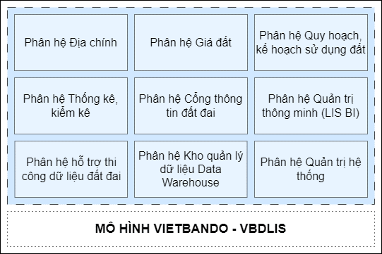

Phần mềm thông tin đất đai Vietbando - VBDLIS được xây dựng dành cho Sở Tài nguyên và Môi trường, Văn phòng đăng ký Đất đai, Chi nhánh văn phòng đăng ký Đất đai, Cán bộ địa chính xã/phường, các đơn vị liên quan đến công tác quản lý về đất đai; dành cho công dân và các doanh nghiệp có nhu cầu khai thác thông tin đất đai.
Phần mềm thông tin đất đai Vietbando - VBDLIS là một hệ thống phần mềm cung cấp các giải pháp tổng thể phục vụ công tác quản lý nghiệp vụ đất đai, đẩy nhanh tiến độ số hóa và xây dựng cơ sở dữ liệu đất đai theo hướng quản lý tập trung; đảm bảo khả năng kết nối và chia sẻ thông tin với hệ thống thông tin của các sở, ban ngành, kết nối với Cơ sở dữ liệu đất đai quốc gia.
Hệ thống được triển khai trên môi trường máy chủ điện toán đám mây, với khả năng co giãn linh hoạt và điều chỉnh tức thời theo nhu cầu sử dụng, đáp ứng được nhu cầu mở rộng và sử dụng dữ liệu đất đai lớn hơn trong tương lai.
Hệ thống sử dụng công nghệ tùy biến quy trình Workfow, đáp ứng yêu cầu nghiệp vụ đặc thù của từng địa phương; cung cấp các giải pháp GIS toàn diện bao gồm ứng dụng nghiệp vụ trên nền tảng Web và công nghệ biên tập dữ liệu không gian trên nền tảng Desktop. Đồng thời, hệ thống đảm bảo tính bảo mật và an toàn thông tin cao, đáp ứng được yêu cầu của người dùng trong việc sử dụng dữ liệu đất đai.
Phần mềm thông tin đất đai Vietbando - VBDLIS là hệ thống quản lý dữ liệu đất đai tập trung với mô hình khép kín từ khâu Thi công - Tích hợp - Vận hành. Sản phẩm từ hệ thống Hỗ trợ thi công sẽ được tích hợp vào các phân hệ (Địa chính, Thống kê kiểm kê, Giá đất, Quy hoạch kế hoạch sử dụng đất) để sử dụng cho vận hành.
Phần mềm góp phần tạo lập hệ thống quản lý đất đai hiện đại, hiệu quả, đẩy mạnh cải cách thủ tục hành chính, nâng cao chỉ số tiếp cận đất đai; tăng sự hài lòng của công dân đối với chất lượng dịch vụ công của chính quyền. Là cơ sở quan trọng cho việc ra quyết định liên quan đến việc đầu tư, phát triển, quản lý và sử dụng đất đai hướng tới mục tiêu xây dựng Chính phủ số điện tử, tiến tới Chính phủ số, phát triển kinh tế, xã hội số, đô thị thông minh.
Tất cả các môđun chức năng được thực thi trên các máy chủ trung tâm. Người dùng sử dụng thông qua giao diện web được kết nối đến máy chủ bằng giao thức bảo mật.
Các chức năng hệ thống mà người dùng được truy cập đến còn phụ thuộc vào quyền hạn được cấp của tài khoản dùng để đăng nhập vào hệ thống. Quản trị của hệ thống được phép chỉ định hoặc điều chỉnh quyền truy cập từ máy chủ trung tâm.

Phân hệ Địa chính phục vụ công tác quản lý, vận hành, khai thác Cơ sở dữ liệu Địa chính với mô hình tập trung, thống nhất từ cấp Tỉnh đến Xã/Phường, bao gồm các nhóm chức năng: Xử lý nghiệp vụ: Tiếp nhận hồ sơ, Xử lý hồ sơ TTHC, Quản lý, biên tập dữ liệu Địa chính, Quản lý, biên tập dữ liệu không gian Địa chính, Cung cấp thông tin, Tra cứu lịch sử biến động, giao dịch bảo đảm, Xử lý liên thông thuế, Thiết lập cấu hình kho số, sổ, hồ sơ quét; Quản lý điều hành; Ngăn chặn tập trung; Tích hợp đồng bộ dữ liệu,…
Phân hệ Giá đất - hỗ trợ quản lý, khai thác, phân tích, báo cáo, cập nhật và cung cấp các thông tin về giá đất tại địa phương, bao gồm các chức năng: Quản lý dữ liệu thuộc tính giá đất, Quản lý kho hồ sơ quét (văn bản pháp lý) giá đất, Báo cáo thống kê giá đất, Quản lý siêu dữ liệu giá đất, Ứng dụng Desktop xây dựng dữ liệu giá đất.
Phân hệ Quy hoạch kế hoạch sử dụng đất - hỗ trợ quản lý, cập nhật và truy xuất thông tin về quy hoạch, kế hoạch sử dụng đất tại địa phương, bao gồm các chức năng: Quản lý dữ liệu không gian quy hoạch, Quản lý dữ liệu thuộc tính quy hoạch, Quản lý kho hồ sơ quét QHKHSDĐ, Quản lý siêu dữ liệu QHKHSDĐ, Ứng dụng Desktop xây dựng dữ liệu QHKHSDĐ.
Phân hệ Thống kê, kiểm kê - hỗ trợ quản lý, khai thác, cập nhật, thống kê và kiểm kê thông tin liên quan đến đất đai tại địa phương: Bản đồ Khoanh đất, Hiện trạng sử dụng đất cấp xã, Hiện trạng sử dụng đất cấp huyện, , Hiện trạng sử dụng đất cấp tỉnh, Quản lý Siêu dữ liệu đất đai, Ranh giới KVTH cấp xã, huyện, tỉnh, Quản lý danh mục, bộ số liệu, Hồ sơ quét.
Phân hệ cổng thông tin đất đai cung cấp các chức năng về khai thác thông tin về dữ liệu địa chính, quy hoạch sử dụng đất, giá đất,... Cho người dân và doanh nghiệp khai thác thông tin. Quản lý tài khoản, nộp hồ sơ trực tuyến, quản lý hồ sơ, cung cấp thông tin dịch vụ công, phản ánh kiến nghị, quản lý hệ thống cổng dịch vụ công.
Bao gồm các chức năng hỗ trợ phân tích, báo cáo thống kê về: cơ sở dữ liệu địa chính, cơ sở dữ liệu thống kê kiểm kê, cơ sở dữ liệu quy hoạch, cơ sở dữ liệu giá đất, cơ sở dữ liệu điều tra, đánh giá đất đai, cơ sở dữ liệu khác liên quan đất đai, quản lý cơ sở dữ liệu, tổng hợp, báo cáo cho phép khai thác thông tin đa chiều, phục vụ công tác quản lý nhà nước và ra hỗ trợ ra quyết định.
Hệ thống cung cấp các chức năng hỗ trợ thi công dữ liệu địa chính, thống kê kiểm kê, quy hoạch kế hoạch sử dụng đất, giá đất.
Hệ thống cung cấp các chức năng về: bản đồ, khai thác và truy vấn dữ liệu, quản lý các lớp dữ liệu, báo cáo động dữ liệu, biên tập dữ liệu không gian trên desktop.
Hệ thống cung cấp các chức năng về: quản lý tài khoản, quản trị người dùng, quản trị quy trình, quản trị danh mục dùng chung, quản lý truy cập người dùng, cấu hình hệ thống,...